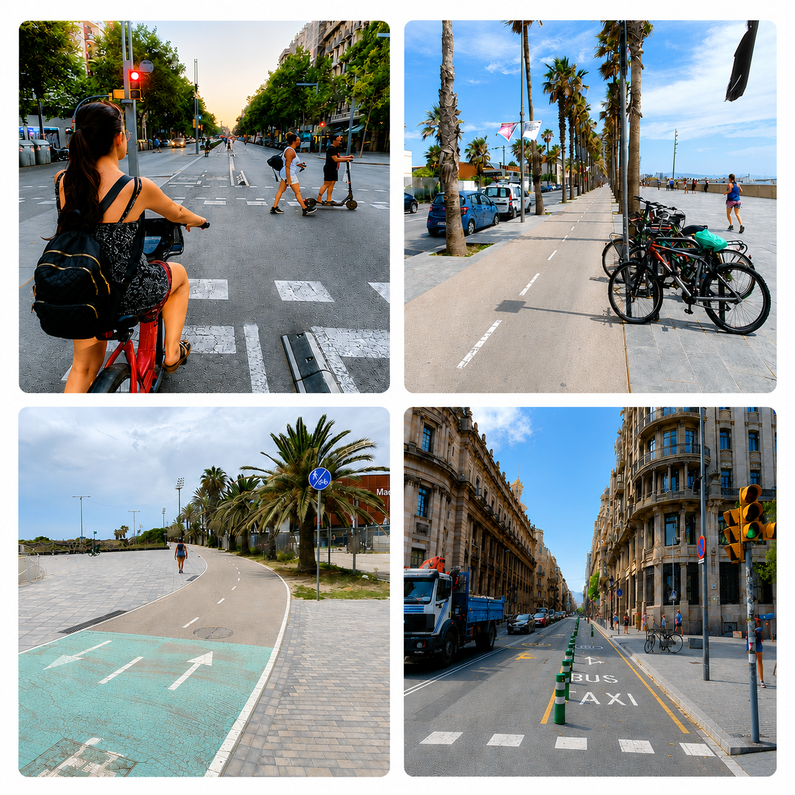
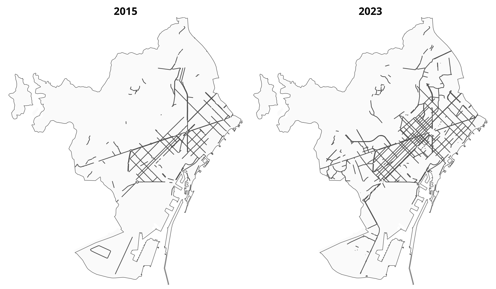
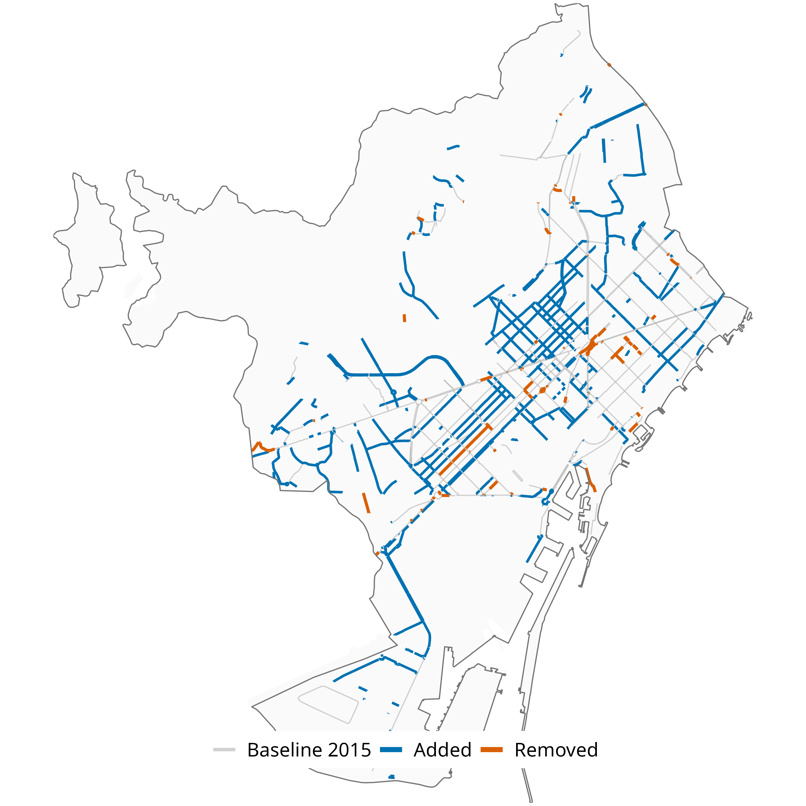
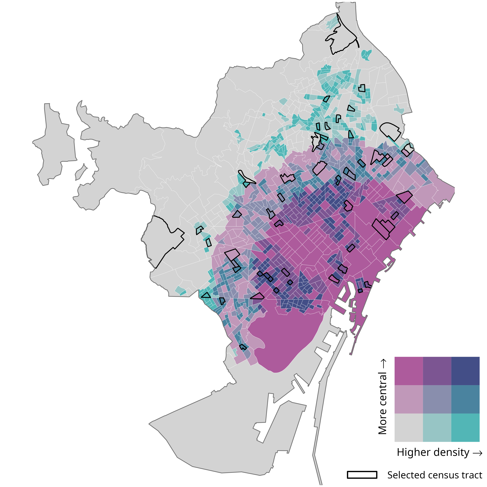
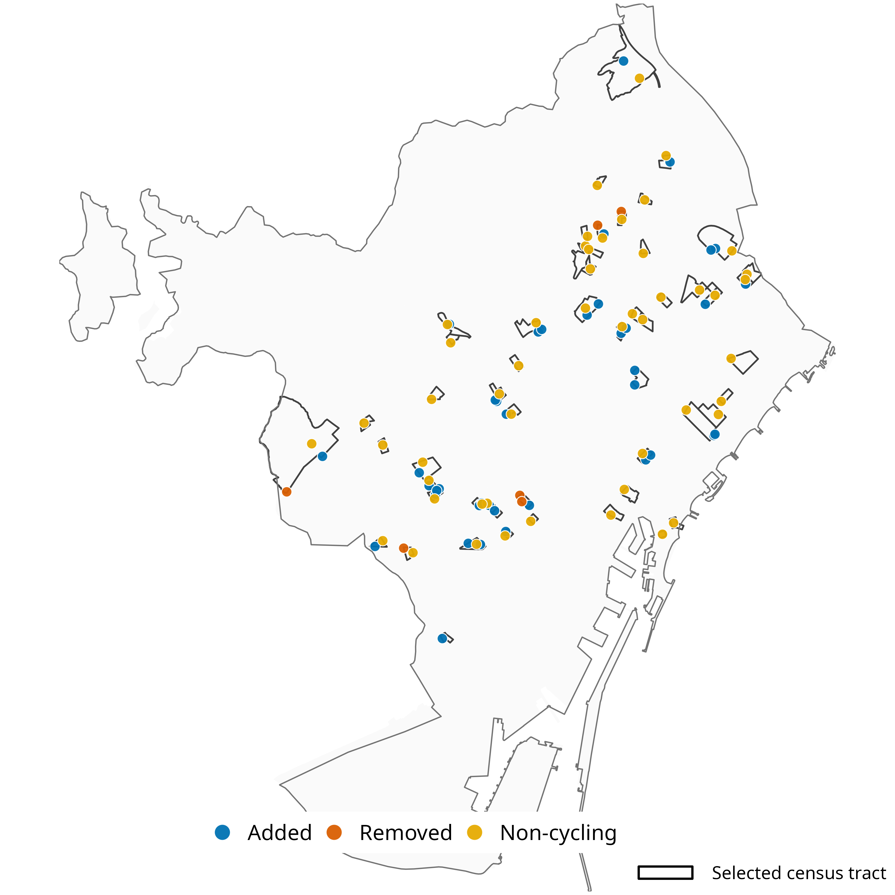
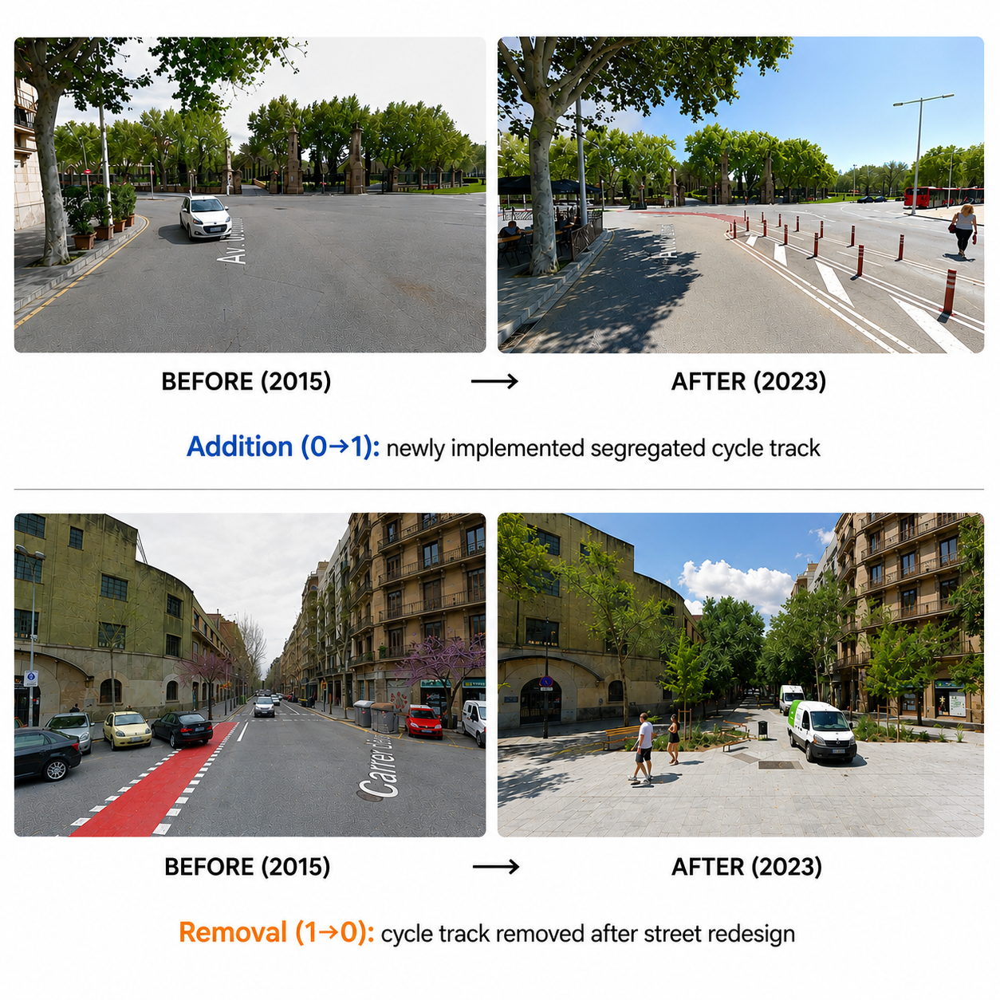
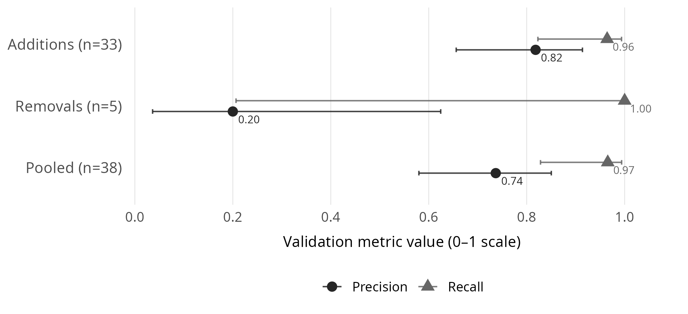

Can We Trust OpenStreetMap to Measure Cycling-Infrastructure Change?
Can We Trust OpenStreetMap to Measure Cycling-Infrastructure Change?
A Reproducible Validation Framework Using Google Street View
Eugeni Vidal-Tortosa, Víctor Gonzàlez-Parra, Oriol Marquet
GEMOTT, Universitat Autònoma de Barcelona
WSTLUR 2026 · Beijing
Project: 101117700 — ATRAPA — ERC-2023-STG
INTRODUCTION
Cities are rapidly expanding cycling infrastructure
We need longitudinal data to understand its impacts
OpenStreetMap (OSM) offers global, historical data
But can we trust OSM to detect change over time?

INTRODUCTION
Quantify the accuracy of OSM for detecting cycling-infrastructure change
DATA & METHODS

DATA & METHODS
↓
↓
↓
↓
DATA & METHODS

DATA & METHODS
Barcelona stratified by:
3 × 3 density–centrality strata
6 census tracts randomly sampled per stratum (54 total)

DATA & METHODS
Validation points sampled within selected census tracts
Up to:
Points linked to historical GSV imagery

DATA & METHODS

DATA & METHODS
\(\mathrm{Precision} = \frac{TP}{TP + FP}\)
What proportion of detected OSM changes are real?
\(\mathrm{Recall} = \frac{TP}{TP + FN}\)
What proportion of real changes are captured by OSM?
RESULTS

High precision and recall for additions
Most apparent removals were not confirmed; estimates remain uncertain (small sample)
DISCUSSION
GSV availability varies spatially and temporally
Manual validation remains necessary
Removal estimates based on small sample sizes
Performance may vary across cities and OSM mapping communities
DISCUSSION
Additions are detected reliably
Removals are not reliably detected
OSM accuracy should not be assumed
Reproducible framework to measure and calibrate OSM-based change
eugeni.vidal@uab.cat
Code and reproducible workflow available upon request